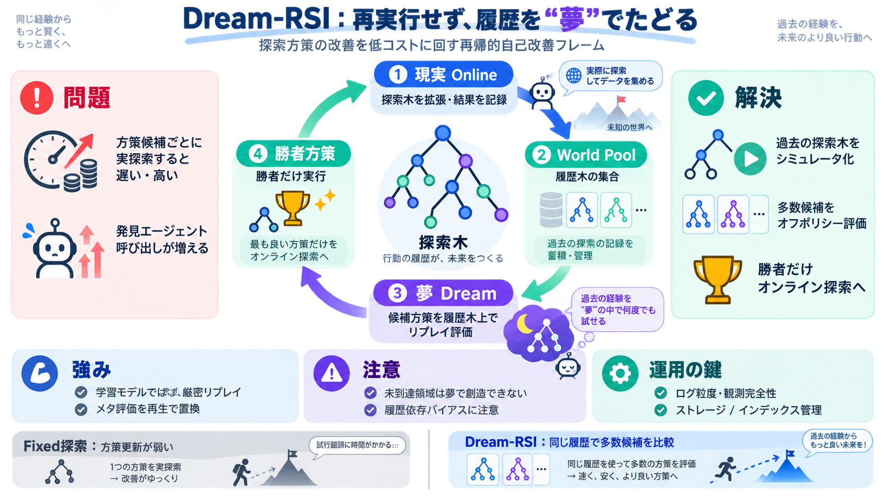

Dream-RSI: Recursive Self-Improvement through Evolving ...
Dream-RSI achieved a Sum–Difference score of 1.145427, compared with 1.144047 for fixed exploration and 1.143975 for Sim…

夢による再帰的自己改善
探索方策の改善を「再実行」ではなく「リプレイ（履歴木のたどり）」で高速化し、低コストに再帰的自己改善を回す枠組み。
メタ評価が高い
探索方策の良し悪しは、通常は実際に探索を走らせてフィードバックを得る必要があるため、遅く・高価になりやすい。
方策候補ごとに実探索を回さないと比較できない。
評価のための実行（発見エージェント呼び出し）が増える。
夢＝履歴の再生
実世界で試さず、過去に作った探索履歴（探索木）を別の方策でたどり、結果を即座に返す。
履歴木がシミュレータ
過去の探索履歴を単なるログでなく「リプレイ可能な世界（シミュレータ）」として扱う。
分岐で「何が起きたか」の実行済みアウトカム
到達した探索空間の構造そのもの
木の集合として方策改善の“参照世界”を増やす
評価を“たどる”
候補方策を多数、実行せずに履歴木上でたどって評価し、勝者だけをオンライン探索に投入する。
順序・分岐・並列グループ・停止条件を変えて“同じ世界”を再生する
勝者方策で次の探索木を拡張し、新しい“世界”をプールへ追加
近似しない再生
「learned world model（学習された世界モデル）でも近似でもない」と明確に位置づける。
※正確性は「履歴木が表現する範囲」に依存し、未到達領域は夢で創造できない。
意味より整合
「意味的ガイダンスはリプレイより悪い」とする分析があり、強い事前知識が多様性を落とし得る。
意味的な事前知識が探索を狭め、収束が早すぎる
“リプレイ整合性（履歴に合う再生）”を優先し、多様な分岐を保つ
再帰性は世界で強化
勝者方策をオンラインに戻し、新しい探索木を獲得して世界プールへ追加することで再帰ループを作る。
夢（評価）→勝者→現実（拡張）→再び夢
単一試行の運に引きずられにくくなる
より低い発見エージェント呼び出しで高品質へ
固定探索との違い
固定探索は方策更新が難しく、良かった/悪かったのメタ反映が弱い。一方Dream-RSIはオフポリシー評価で方策そのものを改善する。
探索方策が更新されにくく、経験のメタ学習が限定的
同じ履歴上で多数候補を比較し、勝者をオンラインへ
偏りの源泉
夢でたどれるのは履歴木が作った探索空間のみなので、過去の偏りが評価へ引きずられる可能性がある。
ただし、緩和条件（何ラウンドでどれだけ多様化できるか）は本文抜粋だけでは判断できない。
運用の鍵は記録
オフポリシー評価は強力だが、探索木の記録・管理（ストレージ、インデックス、ノード整合性）を大規模に回せるかが鍵。
“正確な再生”のためのログ粒度と観測完全性
履歴が増えるほど評価が重くならないか、再現性はどうか
結論：低コスト自己改善
Dream-RSIは、履歴木を“厳密リプレイ・シミュレータ”化して、方策候補の大量スクリーニングを低コストに実現する。
高コストなメタフィードバックを、再生で置換
履歴の範囲に限定されるため偏りが残り得る
探索木保存コスト・大規模運用・オンライン安全性
Bilingual: 夢（dreaming）＝履歴木のリプレイで候補方策を評価（evaluation）する仕組み。
Dream-RSI achieved a Sum–Difference score of 1.145427, compared with 1.144047 for fixed exploration and 1.143975 for Sim…
circle packing), it matches or surpasses strong baselines within 1k1\text{k} generations, yielding over 50×50\times bud…
That comes from a preprint posted to arXiv on 14 Sep 2026 by a team spanning the University of Maryland, Google Deepmind…
matches or exceeds existing systems with substantially lower compute. In GPU kernel engineering, it reaches comparable o…
under delayed and expensive feedback over long-horizon rollouts. We introduce Dream-RSI, a framework for scalable and re…